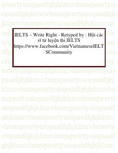

IWIELTS yozish imtihoniga tayyorgarlik ko'rish uchun amaliy qo'llanma va maslahatlar.
Ushbu qo'llanma IELTS imtihonining yozish (Writing) bo'limiga tayyorgarlik ko'rayotganlar uchun mo'ljallangan bo'lib, Task 1 va Task 2 topshiriqlarini bajarish bo'yicha muhim maslahatlar, savol-javoblar va band baholash mezonlarini o'z ichiga oladi. Kitob nomzodlarga o'z fikrlarini mantiqiy yetkazish, boy lug'at boyligi va to'g'ri grammatikadan foydalanish ko'nikmalarini oshirishga yordam beradi.